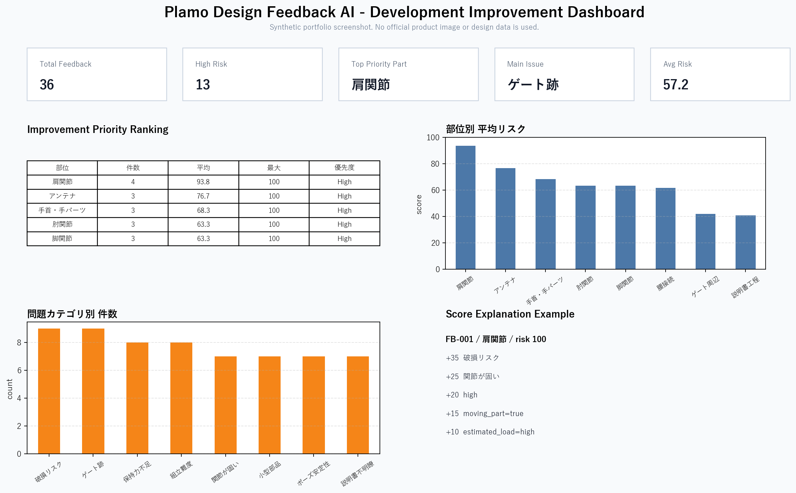

Product Article
Plamo Design Feedback AI
現在の状態
この制作物は開発中のプロトタイプです。現在のランナー画像や完成後画像は、適切な実証素材ではなく、機能説明用の仮素材として扱っています。 今後、権利処理済みで説明に適したランナー写真・試作サンプル写真を用意する予定です。 ただし準備が難しい可能性もあるため、実物写真に依存せず、模式図・ワイヤーフレーム・検査点マップで説明する別案も検討しています。現時点では差し替え方法を決定していません。

レビュー文、部品特徴、改善案、リスクマップ、MarkdownレポートまでをStreamlitで一気通貫に可視化 公開デモ: https://plamo-design-feedback-ai.streamlit.app/
作った理由
ユーザーのレビューには、部品が壊れやすい、関節が固い、説明書が分かりにくいといった改善のヒントが含まれます。 ただし自由記述のままだと、設計改善に使える形へ整理しにくい。そこで、レビューと部品特徴を分類し、 リスクスコアと改善優先度に変換するMVPを作りました。
設計判断
最初から大きなAIモデルに任せるのではなく、ルールベースの分類、スコアリング、改善案生成を分けました。 これにより、どの入力がどの判断に影響したかを説明しやすくなります。 将来的にLLMや画像解析を入れる場合も、既存の関数インターフェースを差し替える形で拡張できます。
検証
Streamlitの画面、pandasによる集計、Plotlyの可視化、Markdownレポート出力を一通り動かしました。 単体テストと起動スモークを用意し、README用スクリーンショットも生成できるようにしています。 ローカル画像入力では、対象ランナーだけを選ぶROI指定、シール・箱・反射などが混在する画像への適性警告、軽量な特徴候補の提案を追加しました。 UIは「AIが判断した結果」ではなく「設計者が次に見るべき材料」を出すことを重視しました。
今後の改善
第一案は、利用範囲を確認したランナー写真と試作サンプル写真を用意し、撮影条件と注釈基準をそろえて差し替えることです。 同時に、素材準備が難しい場合の別案として、架空の模式図、ワイヤーフレーム、検査点マップ、部品特徴データ表だけで評価フローを説明できる構成を検討しています。 どちらの場合も、現在の仮画像を認識精度や実用性の根拠には使いません。